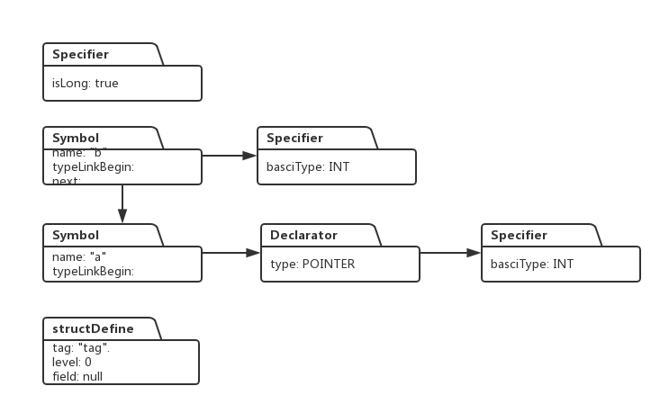

代码讲解和调试流程请参看视频：
Linux kernel Hacker, 从零构建自己的内核
上一节，我们研究了如何在语法上解析结构体，这一节，我们在语法分析的基础上，实现结构体符号表和类型系统的代码，我们要解析的结构体定义如下：
struct tag {
int *a, b;
long c;
sturct tag *d;
}name;前一节我们已经分析过语法解析的步骤，现在我们沿着前面描述的步骤，在给定步骤处采取相应措施，从而在整个语法解析流中构建结构体的符号表和类型系统。
语法解析过程中实现符号表和类型系统构建
1: 解析器通过shift 操作将关键字struct 和 变量名tag 读入，变量名会给解析器返回标签NAME, 然后根据表达式 TAG -> NAME 做reduce操作，此时我们可以建立一个StructDefine对象，用来描述当前变量的类型是结构体，StructDefine代码如下：
/*
* struct argotiers {
* int (*Clopin)();
* double Mathias[5];
* struct argotiers* Guillaume;
* struct pstruct {int a;} Pierre;
* }
*/
public class StructDefine {
private String tag; //结构体的名称,例如上面的例子中，对应该变量的值为 "argotiers"
private int level; //结构体的间套层次
private Symbol fields; //对应结构体里的各个变量类型
public StructDefine(String tag, int level, Symbol fields) {
this.tag = tag;
this.level = level;
this.fields = fields;
}
public void setFields(Symbol fields) {
this.fields = fields;
}
public String getTag() {
return tag;
}
public int getLevel() {
return level;
}
public Symbol getFields() {
return fields;
}
}此时属性堆栈上就有了一个StructDefine对象：
同时将它加入到一个专门的HashMap对象，键值是StructDefine对象的tag字符串。
2： 解析器通过shift操作读入左括号和接下来的关键字int, int对应的标签是TYPE,根据TYPE_SPECIFIER -> TYPE，解析器会进行reduce操作，同时为int建立一个Speicifer对象，这样，属性堆栈上就有两个对象：
3: 进过一系列reduce操作后，int后面的*号被读入，解析器得到它的标签STAR,接下来解析器继续读入星号后面的变量名a, 在通过表达式NEW_NAME -> .NAME进行reduce时，为变量a建立symbol对象：

4.从非终结符NEW_NAME开始，经过递归：VAR_DECL -> .NEW_NAME，于是解析堆栈顶部的两个元素，一个是* ，另一个是reduce后得到的VAR_DECL,这两个元素构成了表达式：VAR_DECL -> .STAR VAR_DECL 右边，于是可以进行reduce操作，同时为属性堆栈顶部的Symbol建立一个Declaratord对象：
5: 解析器接着读入逗号(COMMA), 和变量名b, 然后根据表达式：NEW_NAME -> .NAME进行reduce, 同时为变量b构造symbol对象：
6: 经过两次变换：VAR_DECL -> NEW_NAME， DECL -> VAR_DECL，将非终结符DECL传入解析堆栈，于是解析堆栈上的三个元素为：DECL_LIST， COMMA ，DECL。它们正好满足表达式：DECL_LIST -> .DECL_LIST COMMA DECL,于是进行一次reduce操作，此时，将变量b的Symbo与变量a的Symbol连接到一起：
7：解析器把变量b后面的分号读进来，从而解析堆栈上头三个元素分别是：SPECIFIERS， DECL_LIST， SEMI。他们正好构成了表达式DEF -> .SPECIFIERS DECL_LIST SEMI 的右边部分，于是可以根据该表达式进行reduce操作，这一次，解析器将类型说明对象Specifier添加到属性堆栈上的每一个Symbol对象：
8: 接着通过表达式DEF_LIST -> .DEF将非终结符DEF换成DEF_LIST,然后读入下一个关键字long,同时得到对应的标签TYPE, 于是再次通过表达式TYPE_SPECIFIER -> .TYPE进行reduce操作，同时在属性堆栈上创建一个Specifier对象：

然后根据表达式TYPE_OR_CLASS -> .TYPE_SPECIFIER，SPECIFIERS -> .TYPE_OR_CLASS进行两次变换，将SPECIFIERS非终结符压入解析堆栈。
9：读入long后面的变量c,返回它的标签NAME,依据表达式NEW_NAME -> .NAME进行reduce,同时生成一个Symbol对象：
接着通过三个表达式：VAR_DECL -> .NEW_NAME，DECL -> .VAR_DECL，DECL_LIST -> .DECL进行变换，将非终结符DECL_LIST压入解析堆栈。
10：读入变量c后面的分号(SEMI),此时解析堆栈上的头三个元素构成表达式：DEF -> .SPECIFIERS DECL_LIST SEMI的右边，于是解析器根据该表达式进行变换，同时将Specifier{isLong:true}这个对象添加到顶部Symbol对象的类型列表：

11： 接着解析器通过表达式：DEF_LIST -> .DEF_LIST DEF进行reduce操作，同时将属性堆栈顶部的两个symbol列表链接起来：

12: 接下来读入关键字struct 以及变量名tag, tag对应的标签是NAME，于是通过TAG->NAME进行reduce操作，同时解析器到哈希表中查找是否有当前tag对应的结构体对象，由于在开始第一步时，我们已经把tag对应的结构体对象加入到哈希表中，因此此时将不再构建新的StructDefine对象。然后再次通过表达式STRUCT_SPECIFIER -> .STRUCT TAG 将非终结符STRUCT_SPECIFIER压入属性堆栈。
13：解析器通过表达式：TYPE_SPECIFIER -> .STRUCT_SPECIFIER进行reduce操作，同时生成一个Specifier对象，该对象的类型是STRUCT,同时把第一步生成的StructDefine对象设置到Specifier的vStruct对象中:
然后接着根据两个表达式 TYPE_OR_CLASS -> .TYPE_SPECIFIER，SPECIFIERS -> .TYPE_OR_CLASS 进行reduce,然后将SPECIFIERS非终结符压入解析堆栈。
14： 读入*, 返回对应的标签STAR, 读入变量名d,返回标签NAME, 根据NEW_NAME -> .NAME进行reduce,同时为变量d构造一个Symbol对象：
然后根据表达式VAR_DECL -> .NEW_NAME将非终结符VAR_DECL压入解析堆栈
15： 此时解析堆栈上的头两个元素构成了表达式VAR_DECL -> .STAR VAR_DECL的右边部分，于是进行对应的reduce操作，同时为属性堆栈顶部的Symbol对象生成一个Decalartor对象：
接着按照流程根据表达式DECL -> .VAR_DECL，和DECL_LIST -> .DECL进行reduce，这样非终结符DECL_LIST便会压入属性堆栈。
16：读入d后面的分号(SEMI),此时解析堆栈上的符号构成表达式：DEF -> .SPECIFIERS DECL_LIST SEMI 右边部分，因此可以进行reduce操作，同时将Specifier:{basicType:STURCT}添加到顶部Symbol对象的类型列表中：
17: 接下来通过表达式DEF_LIST -> .DEF_LIST DEF 做reduce操作，同时将顶部的Symbol与下面的Symbol链接成链表：
18：接着读入右括号},得到对应标签RC, 同时可以通过表达式STRUCT_SPECIFIER -> .STRUCT OPT_TAG LC DEF_LIST RC 进行reduce操作，此时可以把上一步形成的Symbol链表设置到StructDefine对象的fields域：
19: 根据表达式TYPE_SPECIFIER -> .STRUCT_SPECIFIER进行reduce,此时又可以在属性堆栈顶部构建一个Specifer对象，它的类型是STRUCT, vStruct指针指向堆栈上的StructDefine对象：
然后再通过TYPE_OR_CLASS -> .TYPE_SPECIFIER，SPECIFIERS -> .TYPE_OR_CLASS，OPT_SPECIFIERS -> .SPECIFIERS，三个表达式把OPT_ SPECIFIERS压入解析堆栈。
20： 读入变量名name, 得到其对应的NAME 标签，通过NEW_NAME -> .NAME进行reduce,同时为name生成一个Symbol对象：
接着根据三个表达式：VAR_DECL -> .NEW_NAME，EXT_DECL -> .VAR_DECL，
EXT_DECL_LIST -> .EXT_DECL进行reduce, 于是EXT_DECL_LIST便可以压入解析堆栈：
21： 读入最后的分号SEMI,根据表达式EXT_DEF -> .OPT_SPECIFIERS EXT_DECL_LIST SEMI 进行reduce, 此时把顶部的Symbol和下面的Specifier对象连接起来，于是整个结构体的符号表类类型系统的建立就完美结束了：